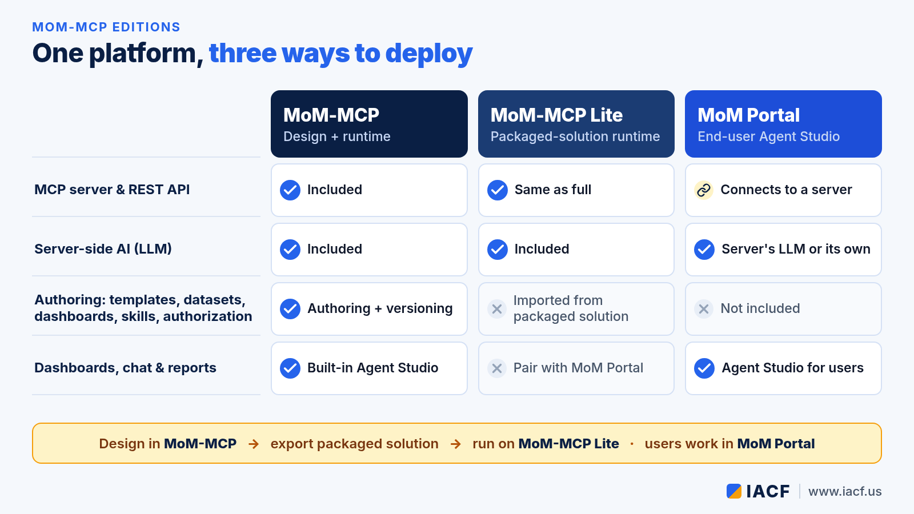
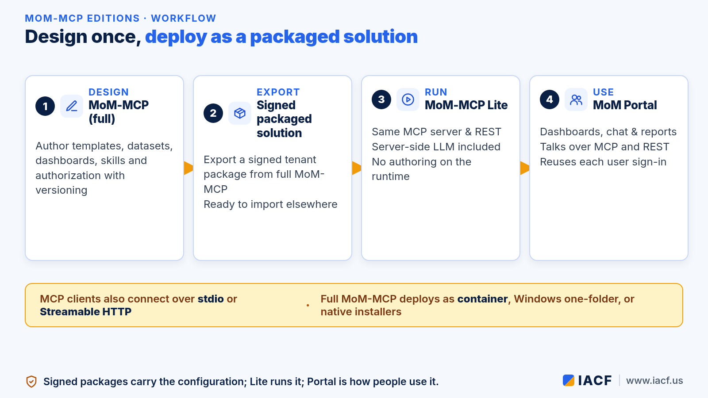
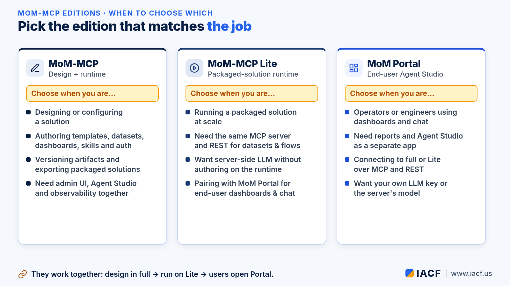

Choosing a MoM-MCP Edition: Full, Lite, or Portal
MoM-MCP is IACF's bridge between AI and large language models (LLMs) and the manufacturing applications a plant already runs: MES/MoM, ERP, PLM, CRM, QMS and others. One question comes up as soon as a team starts a pilot: which edition do we install where?
There are three pieces that work together. MoM-MCP (full) is the design and runtime environment. MoM-MCP Lite is a packaged-solution runtime. MoM Portal is the end-user Agent Studio. This guide compares them, walks through the design → package → runtime workflow, and helps you pick the right combination for design work, plant deployment and day-to-day use.
If you are new to MoM-MCP, start with our introduction to MoM-MCP.

Side-by-side comparison
All three speak the same protocols. The differences are about authoring, where the configuration lives, and who gets a UI.
- MCP server and REST API. Full MoM-MCP and MoM-MCP Lite both expose the MCP server and REST API for datasets, connections, flows, pipelines and scheduled jobs. MoM Portal does not run its own server; it connects to a full or Lite server over MCP and REST.
- Server-side AI (LLM). Full and Lite both include server-side LLM capability. MoM Portal can use the server's model or its own key, switched from an LLM Settings panel.
- Authoring. Only full MoM-MCP lets you create and configure templates, datasets, dashboards, skills and authorization, with versioning. Lite imports that configuration from a signed packaged solution exported from full MoM-MCP. Portal has no authoring of its own.
- Dashboards, chat and reports. Full MoM-MCP ships with a built-in Agent Studio. Lite has no bundled end-user chat or dashboard UI, so you pair it with MoM Portal. Portal is the standalone Agent Studio for operators and engineers.
The workflow: design once, run as a package

The intended path is a clean separation between design and production runtime:
- Design in MoM-MCP (full). Use the admin UI to author templates, datasets, dashboards, skills and authorization. Artifacts are versioned (draft → prototype → active → archived). You also get built-in Agent Studio and observability here.
- Export a signed packaged solution. Full MoM-MCP exports a signed tenant package that carries the configuration you designed.
- Run on MoM-MCP Lite. Import the package on Lite. You keep the same MCP server and REST surface, including server-side LLM, without authoring on the runtime. Lite also adds a run-now endpoint for cron jobs.
- Users work in MoM Portal. Operators and engineers open dashboards, chat and reports in Portal. It reuses each user's own sign-in, has no database or license enforcement of its own, and gates every real action on the MoM-MCP server.
MCP-compatible clients can also connect directly over stdio or Streamable HTTP. Full MoM-MCP itself deploys as a Linux container, a Windows one-folder app, or native installers for Windows and major Linux distributions. MoM Portal deploys as a Windows packaged app or a container on its own port, so it can scale independently of the server.
When to choose which

Choose full MoM-MCP when you are designing or configuring
Use the full edition when solution architects and admins need to build or change the solution: authoring templates and datasets, defining dashboards and skills, setting authorization, versioning artifacts and exporting packaged solutions. It is also where you want admin UI, Agent Studio and observability in one place.
Choose MoM-MCP Lite when you are running a packaged solution at scale
Use Lite as the deployment target once the solution is designed. It gives you the same MCP server and REST API for datasets, connections, flows, pipelines and cron, with server-side LLM included, but without authoring on that runtime. Configuration comes only from a signed package exported from full MoM-MCP. Pair Lite with MoM Portal whenever end users need dashboards and chat.
Choose MoM Portal when operators and engineers need the UI
Use Portal when people need dashboards, chat and reports as a separate app. It talks to full or Lite over MCP and REST, reuses existing sign-in, and can use the server's LLM or its own key. It does not replace the server; it is how people use it.
Putting it together
Most teams will use more than one edition. A typical pattern is full MoM-MCP in a design or staging environment, MoM-MCP Lite in the plant or production runtime, and MoM Portal as the front door for operators, supervisors and engineers. MCP clients can sit alongside Portal when a desktop AI assistant or custom agent needs the same governed tools.
For a deeper look at what MoM-MCP does as the governed bridge to manufacturing applications, see the introduction article. To map editions to your own environments, visit www.iacf.us or email info@iacf.us.